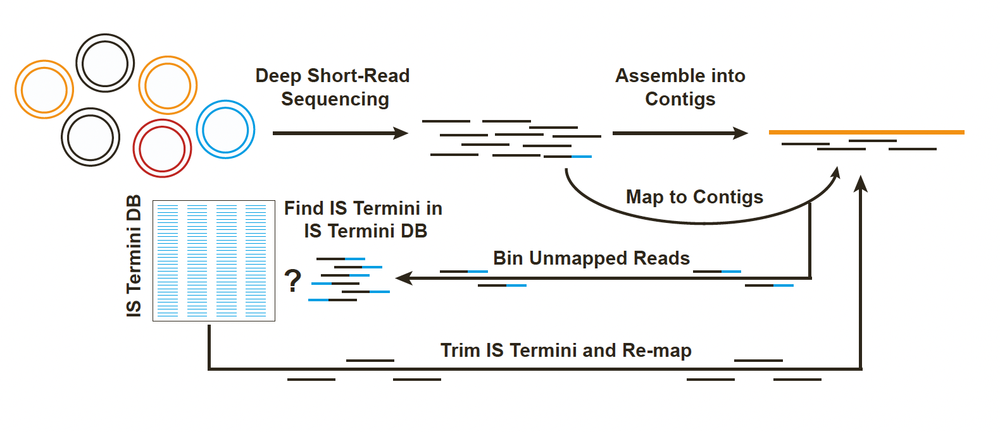

!source pseudoR_single-reference.sh sraList=my-list.txt threads=10 database=/scratch/user/s4897040/pseudoR \
dedupe=../data/ecoli958/fastqs/ mode=s reference=../outputs/spades-isolates/contigs.fasta \
read1_ending=_1.fastq.gz read2_ending=_2.fastq.gz IR_database=/scratch/user/s4897040/pseudoRWeek 09: Reannotate IS from EC958, Run PseudoR, and annotated other assemblies data using isescan
Overview
Daily Log
22-09-2025
Weekly project meeting
- Dimas will reannoate IS from EC958. Adding newly detected IS that are confrimed as true IS. Also, if there are two same IS copies, adding suffix
_1,_2, etc. - Run pseudoR on EC958 genome, and parse the result in a way that can have ISfinder nomenclature
- Run isescan on the bacterial genome from Hall et all paper, and later run eris. Identify if any additional IS called by eris compared to isescan, and if any IS missed by eris relative to isescan result.
- Use isescan results as the “truthset”
- Compare IS effect prediction (such as upregulated and downregulated) between complete sequence and draft assembly
- Dimas will reannoate IS from EC958. Adding newly detected IS that are confrimed as true IS. Also, if there are two same IS copies, adding suffix
22-09-2025
- Dimas has rewritten IS annotation of EC958, in a total of 49 IS elements identified in the chromosome sequence. For IS name with multiple copies, each copy is labeled with a suffix
_1,_2,_3, and so on.
24-09-2025
I ran pseudoR with simulated EC958 reads using the complete EC958 chromosome as the reference. I also tried using simulated reads with the assembly contigs, and real reads with the complete chromosome. All these runs failed during the post-processing step when making the output. This is similar to issue #6. In these runs, some some trimmed reads were mapped with termini of IS elements, but they were all filtered out in post-processing, so no entries were left, and the program gave an error. In other words, I suspect that there were no strong IS insertions detected by
pseudoRin these cases.I aso tried to change the database to ISfinder sequence, but had no luck as well
But when I used real read data with the assembly made from it and used ISOSDB, the run was successful. It detected several IS from ISOSDB in the data
- I tried to compare IS from ISOSDB that were detected by pseudoR with ISFinder. Since the authors mentioned that they use homology with ISFinder sequences (not exact matches) as one of their criteria when they building the ISOSDB, I also searched them using BLAST.
# build ISfinder database (for blast)
!makeblastdb -dbtype nucl -in IS.fna# extract only the IS name field from the report
!tail +2 ../../data/ecoli/pseudoR-outputs/pseudoR_output.contig.tsv | cut -f 2 > ../../data/ecoli/pseudoR-outputs/list_isosdb_names.txt
# pull out the sequences from ISOSDB by IS name or header
!seqkit grep -n -f ../../data/ecoli/pseudoR-outputs/list_isosdb_names.txt ../../ISOSDB.V3.fna -o ../../data/ecoli/pseudoR-outputs/SRR5194982_pseudoR_ISOSDB.fna
# blast ISOSDB sequence query to ISfinder, select only the max hit per query sequence
!blastn -query ../../data/ecoli/pseudoR-outputs/SRR5194982_pseudoR_ISOSDB.fna -db ../../eris/src/eris/data/IS.fna -outfmt 6 -evalue 1e-3 -max_target_seqs 1 -out SRR5194982_blast_ISOSDB_ISfinder.txtimport pandas as pd
isosdb = pd.read_csv("../../data/ecoli/pseudoR-outputs/pseudoR_output.contig.tsv", sep="\t")
isosdb_blast = pd.read_csv("../SRR5194982_blast_ISOSDB_ISfinder.tsv",
sep="\t", header=None,
names=["IS", "ISfinder name", "identity", "alignment length", "mismatches", "gap opens", "q. start", "q. end", "s. start", "s. end", "evalue", "bit score"])
# Keep only the first occurrence of each IS, get the highest hit and lowest e value
isosdb_blast_uniq = isosdb_blast.drop_duplicates(subset=["IS"], keep="first")
# left join
isosdb_isfinder = pd.merge(isosdb, isosdb_blast_uniq, on="IS", how="left")
isosdb_isfinder[["IS", "ISfinder name", "contig", "Insertion_Position", "identity"]]| IS | ISfinder name | contig | Insertion_Position | identity | |
|---|---|---|---|---|---|
| 0 | ISOSDB1225 | IS1203_IS3_IS51 | NODE_3_length_282336_cov_84.584237 | 48 | 97.786 |
| 1 | ISOSDB14220 | ISEc12_IS21_unknown | NODE_3_length_282336_cov_84.584237 | 48 | 99.920 |
| 2 | ISOSDB15646 | ISEcp1_IS1380_unknown | NODE_3_length_282336_cov_84.584237 | 48 | 99.459 |
| 3 | ISOSDB1615 | ISEc23_IS66_unknown | NODE_3_length_282336_cov_84.584237 | 48 | 97.671 |
| 4 | ISOSDB19290 | IS682_IS66_unknown | NODE_3_length_282336_cov_84.584237 | 48 | 99.645 |
| 5 | ISOSDB2061 | IS15_IS6_unknown | NODE_54_length_10117_cov_197.199066 | 56 | 96.274 |
| 6 | ISOSDB20809 | ISEc23_IS66_unknown | NODE_3_length_282336_cov_84.584237 | 48 | 100.000 |
| 7 | ISOSDB4298 | ISEc8_IS66_unknown | NODE_3_length_282336_cov_84.584237 | 48 | 99.372 |
| 8 | ISOSDB5455 | IS629_IS3_IS51 | NODE_3_length_282336_cov_84.584237 | 48 | 99.177 |
| 9 | ISOSDB5523 | NaN | NODE_65_length_5110_cov_193.299505 | 5023 | NaN |
| 10 | ISOSDB7571 | IS6100_IS6_unknown | NODE_3_length_282336_cov_84.584237 | 48 | 100.000 |
| 11 | ISOSDB8740 | ISEc38_ISL3_unknown | NODE_3_length_282336_cov_84.584237 | 48 | 99.361 |
pseudoR detected IS in the EC958 much lower than eris and isescan. With one position seems to be inserted by different IS elements?
Let’s check NODE_3 contigs from eris
!eris scan ../../data/ecoli/spades-isolates/contigs.fasta > eris-outputs/result_fasta_isolate.tsv
eris = pd.read_csv("eris-outputs/result_fasta_isolate.tsv", sep="\t")
eris[eris["Contig"] == "NODE_3_length_282336_cov_84.584237"]| Genome | Feature | Type | Contig | Start | End | Strand | Partial | Element | Element_distance | ... | Element_effect | Percent_identity | Percent_coverage | Name | Family | Group | Synonyms | Origin | IR | DR |
|---|
0 rows × 22 columns
eris did not detect any IS elements in the NODE_3 contig. Those IS detected by pseudoR probably don’t exist in the ISfinder database and probably missed during assembly. When pseudoR is given these reads and complete sequence as the reference, it didn’t detect any IS elements.
After reread the pipeline method described by the author on the paper and his clarification regarding undetected IS here, it appears that pseudoR is primarily intended to detect the movement of IS elements, such as novel insertions, excisions, or differences in insertion sites between samples and a reference, rather than to simply identify the presence of IS elements in a genome.

25-09-2025
- Run
isescanon asssemblies data from Hall et al.
ssubmit -m 64g -t 1d isescan-more "ls ../data/more-bacteria/assemblies/ncbi_dataset/data/*/*.fna | parallel -j 4 isescan.py --seqfile {} --output isescan --nthread 2" -- -c 12- Also, because the outputs from
isescandoesnt give us the IS name, I need to extrarct the sequences detected as IS elements and map them into ISfinder, using blast?
# get the fasta generated by isescan to have sequence identifiers by their IS cluster
!awk '/^>/{print ">" $2; next} {print}' ../../data/ecoli/isescan-outputs/chromosome/EC958.fasta.is.fna > ../../data/ecoli/isescan-outputs/chromosome/EC958.fasta.is.cluster.fna
# blast isescan IS query to ISfinder, select only the max hit per query sequence
!blastn -query ../../data/ecoli/isescan-outputs/chromosome/EC958.fasta.is.cluster.fna -db ../../eris/src/eris/data/IS.fna -outfmt 6 -evalue 1e-3 -max_target_seqs 1 -out EC958_blast_isescan_ISfinder.txtimport pandas as pd
isescan = pd.read_csv("../../data/ecoli/isescan-outputs/chromosome/EC958.fasta.tsv", sep="\t")
isescan_blast = pd.read_csv("EC958_blast_isescan_ISfinder.txt",
sep="\t", header=None,
names=["cluster", "ISfinder name", "identity", "alignment length", "mismatches", "gap opens", "q. start", "q. end", "s. start", "s. end", "evalue", "bit score"])
# Keep only the first occurrence of each IS, get the highest hit and lowest e value
isescan_blast_uniq = isescan_blast.drop_duplicates(subset=["cluster"], keep="first")
# left join
isescan_isfinder = pd.merge(isescan, isescan_blast_uniq, on="cluster", how="left")
print(isescan_isfinder[["cluster", "family", "ISfinder name", "isBegin", "isEnd"]].to_string()) cluster family ISfinder name isBegin isEnd
0 ISNCY_229 ISNCY NaN 159493 161146
1 IS66_46 IS66 ISEc23_IS66_unknown 233728 236259
2 IS481_30|IS481||protein:vir:99858 IS481 NaN 1034454 1036664
3 IS21_259 IS21 ISSen3_IS21_unknown 1371086 1371765
4 IS3_176 IS3 ISEc24_IS3_IS51 1372288 1373517
5 IS4_107 IS4 IS4_IS4_IS4 1417460 1418638
6 IS21_259 IS21 ISSen3_IS21_unknown 1444418 1445660
7 IS21_35 IS21 ISEc12_IS21_unknown 1479960 1482540
8 new_343 new NaN 1486631 1488115
9 ISAS1_192 ISAS1 ISEc1_ISAs1_unknown 1647529 1648819
10 IS3_61 IS3 IS1397_IS3_IS150 1997589 2000056
11 IS200/IS605_138 IS200/IS605 IS609_IS200/IS605_IS605 2103785 2104270
12 IS200/IS605_449 IS200/IS605 IS609_IS200/IS605_IS605 2104066 2104614
13 IS3_61 IS3 IS1397_IS3_IS150 2135366 2136797
14 IS200/IS605_384 IS200/IS605 IS200C_IS200/IS605_IS200 2142424 2143166
15 IS66_345 IS66 ISEc23_IS66_unknown 2238949 2239538
16 ISL3_265|ISL3||protein:plasmid:123177 ISL3 ISEc38_ISL3_unknown 2244045 2245810
17 IS110_139 IS110 ISEc20_IS110_unknown 2248964 2250341
18 IS66_379|IS66||protein:plasmid:117438 IS66 IS100kyp_IS21_unknown 2252181 2254232
19 IS66_46 IS66 ISEc23_IS66_unknown 2265834 2268365
20 IS21_35 IS21 ISEc12_IS21_unknown 2271110 2273690
21 IS200/IS605_384 IS200/IS605 IS200C_IS200/IS605_IS200 2284843 2286985
22 IS1_316 IS1 IS1R_IS1_unknown 2384715 2385482
23 ISNCY_229 ISNCY NaN 2553738 2554524
24 ISNCY_229 ISNCY NaN 2554640 2554861
25 IS21_35 IS21 ISEc12_IS21_unknown 3111848 3114428
26 IS1_316 IS1 IS1R_IS1_unknown 3288120 3288887
27 IS1_316 IS1 IS1R_IS1_unknown 3290147 3290914
28 IS3_355 IS3 IS1203_IS3_IS51 3293652 3294446
29 ISL3_158 ISL3 ISKox3_ISL3_unknown 3294831 3296342
30 IS3_176 IS3 ISEc24_IS3_IS51 3314412 3315290
31 IS3_61 IS3 IS1397_IS3_IS150 3316110 3316705
32 IS110_170 IS110 ISEc45_IS110_IS1111 3318363 3318635
33 IS3_422 IS3 IS2_IS3_IS2 3323698 3325011
34 IS66_46 IS66 ISEc23_IS66_unknown 3335419 3338203
35 IS110_236 IS110 ISKpn42_IS110_unknown 3360116 3360271
36 IS21_69 IS21 ISEc10_IS21_unknown 3360625 3362087
37 IS3_176 IS3 ISEc24_IS3_IS51 3558821 3559602
38 IS200/IS605_138 IS200/IS605 IS609_IS200/IS605_IS605 3820357 3821788
39 IS1_316 IS1 IS1R_IS1_unknown 4140079 4140846
40 IS66_345 IS66 ISEc23_IS66_unknown 4155496 4158244
41 IS3_355 IS3 IS1203_IS3_IS51 4158787 4159646
42 IS66_46 IS66 ISEc23_IS66_unknown 4159760 4160646
43 IS66_43 IS66 ISEc49_IS66_unknown 4161018 4162430
44 IS66_43 IS66 ISEc49_IS66_unknown 4162210 4163858
45 IS66_46 IS66 ISEc23_IS66_unknown 4172115 4174106
46 IS21_259 IS21 ISSen3_IS21_unknown 4175108 4177238
47 ISNCY_229 ISNCY NaN 4177331 4177993
48 IS21_259 IS21 ISSen3_IS21_unknown 4240410 4242477
49 ISNCY_229 ISNCY NaN 4367071 4368653
50 IS4_84 IS4 ISEc13_IS4_IS50 4916195 4916410
51 IS3_461 IS3 ISLad1_IS3_IS3 4922996 4923172
52 IS66_46 IS66 ISEc23_IS66_unknown 4925089 4927620
53 IS1380_141 IS1380 ISEcp1_IS1380_unknown 4937655 4938777
54 IS5_112 IS5 IS5_IS5_IS5 4938926 4940150
55 IS3_176 IS3 ISEc24_IS3_IS51 4942385 4943586
56 IS3_176 IS3 ISEc24_IS3_IS51 4943654 4944431
57 IS1_316 IS1 IS1R_IS1_unknown 4953116 4953883
58 IS3_168 IS3 IS629_IS3_IS51 4954028 4954286
59 IS66_46 IS66 ISEc23_IS66_unknown 4955955 4957396
60 IS66_393 IS66 ISEc8_IS66_unknown 4957255 4958170
61 IS21_35 IS21 ISEc12_IS21_unknown 4971829 4974409
62 IS3_176 IS3 ISEc24_IS3_IS51 5007358 5008139
63 ISL3_158 ISL3 ISKox3_ISL3_unknown 5014358 5016462
64 IS21_259 IS21 ISSen3_IS21_unknown 5068718 506992326-09-2025
Compare IS effect prediction
What approach, in a reproducible way, we can use to compare Element_effect (and Effect_location) prediction from bertween full chromosome sequence and draft assembly/contigs? - because we can’t rely on the genomic coordinates, can we focus on the number? such as:
- Count how many
Element_locationandElement_Effecttype between two sources - We can group the IS and count what is the
Element_locationandElement_effect
{"IS256": {
"intragenic": {"disrupted": 2, "upregulated": 1},
"upstream": {"disrupted": 1}
}
}And compare is this representative enough to compare each insertion effect between the two sources?
- Can we have gene annotation from each gene? and compare the whether the effect is identical for each gene between two sources?
("gene", "IS_name", "Element_location", "Element_effect")